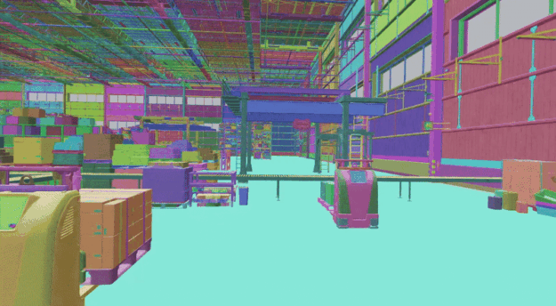
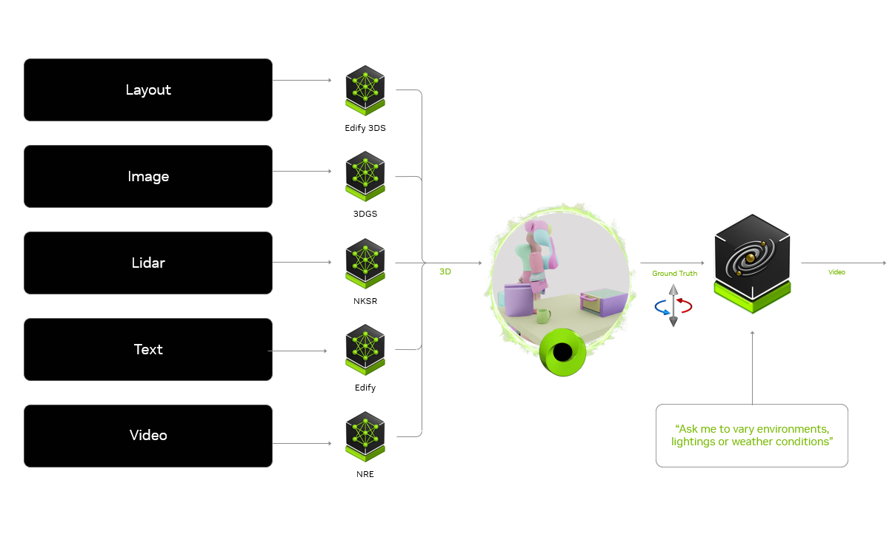
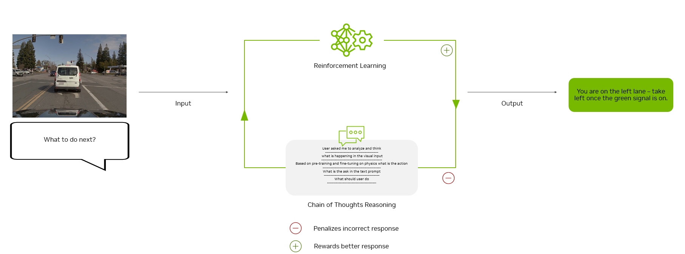

NVIDIA Cosmos World Foundation Modelsで合成データとPhysical AI推論をスケールさせる

ヒューマノイドや自動運転車のような、次世代のAI駆動ロボットは、高忠実度で物理を考慮した訓練データに依存している。多様で代表性のあるデータセットがなければ、こうしたシステムは適切に訓練されず、汎化性能の不足、現実世界の変動への露出不足、エッジケースでの予測不能な振る舞いにより、テスト時のリスクに直面する。訓練用に大規模な実世界データセットを収集することは高コストで時間がかかり、実現可能性にも制約されることが多い。
NVIDIA Cosmosは、World Foundation Model（WFM）の開発を加速することでこの課題に対処する。Cosmosプラットフォームの中核では、Cosmos WFMが合成データ生成を高速化し、下流のドメイン固有またはタスク固有のPhysical AIモデルを開発するためのポストトレーニング基盤として機能する。本記事では、最新のCosmos WFM、Physical AIを前進させる主要機能、そしてその使い方を解説する。
Cosmos World Foundation Modelのアップデート
NVIDIA CosmosのWorld Foundation Modelは急速に進化し続けており、合成データ生成とPhysical AI開発をさらに加速する重要な進歩が加わっている。発表から1年後の主なアップデートは以下の通り。
- Cosmos Transfer 2.5 - シミュレーションと3D空間入力から、より高速かつスケーラブルにデータ拡張を行う。環境、照明条件、シーンバリエーションの多様性を高められる。
- Cosmos Predict 2.5 - 最大30秒のシーケンスに対するロングテールシナリオ生成を強化。独自データやドメイン固有データでポストトレーニングすると、最大10倍高い精度を実現する。マルチビュー出力、カスタムカメラレイアウト、アクションシミュレーションのような代替ポリシー出力にも対応する。
- Cosmos Reason 2 - 時空間理解とタイムスタンプ精度を改善した、高度なPhysical AI推論を提供する。2D/3D点位置とバウンディングボックス座標を伴う物体検出、推論説明、ラベル付けを追加。最大256K入力トークンまでのロングコンテキスト対応も拡張された。
物理に基づくフォトリアル動画のためのCosmos Transfer
Cosmos Transferは、構造化入力から高忠実度な世界シーンを生成し、正確な空間アライメントとシーン構成を保証する。
Cosmos TransferはControlNetアーキテクチャを採用し、事前学習済みの知識を保持しながら、構造化され一貫した出力を可能にする。時空間制御マップを利用して、合成表現と実世界表現を動的に整合させ、シーン構成、物体配置、モーションダイナミクスを細かく制御できる。
入力:
- 構造化された視覚データまたは幾何データ: セグメンテーションマップ、デプスマップ、エッジマップ、人間のモーションキーポイント、LiDARスキャン、軌跡、HDマップ、3Dバウンディングボックス。
- Ground Truthアノテーション: 正確なアライメントのための高忠実度な参照情報。
出力: レイアウト、物体配置、モーションを制御したフォトリアルな動画シーケンス。


主要機能:
- 現実世界の物理と整合する、スケーラブルでフォトリアルな合成データを生成する。
- 構造化されたマルチモーダル入力を通じて、物体の相互作用とシーン構成を制御する。
制御可能な合成データにCosmos Transferを使う
生成AI APIとSDKにより、NVIDIA OmniverseはPhysical AIシミュレーションを加速する。開発者はOpenUSD上に構築されたNVIDIA Omniverseを使い、ロボットや自動運転車の訓練・テストに向けて、現実環境を正確にシミュレートする3Dシーンを作成する。これらのシミュレーションは、アノテーションとテキスト指示と組み合わせられ、Cosmos TransferへのGround Truth動画入力として機能する。Cosmos Transferは、環境、照明、視覚条件を変化させながらフォトリアリズムを高め、スケーラブルで多様な世界状態を生成する。
このワークフローは、高品質な訓練データセットの作成を加速し、AIエージェントがシミュレーションから現実世界のデプロイへ効果的に汎化できるようにする。


Cosmos Transferは、合成マニピュレーションモーション生成のためのIsaac GR00T Blueprintや、訓練時に環境条件・天候条件を変化させるAutonomous Vehicle Simulation向けOmniverse Blueprintにおいて、現実的な照明、色、テクスチャを可能にし、ロボティクス開発を強化する。このフォトリアルなデータは、ポリシーモデルのポストトレーニングに不可欠であり、スムーズなSim-to-Real移行を保証し、Perception AIやGR00T N1のような専用ロボットモデルの訓練を支援する。
新しいCosmos Transfer 2.5を実行する方法
- 新しいCosmos Transfer 2.5で推論を実行するには、推論ガイドに従う。
- 独自データまたはドメインデータでポストトレーニングするには、ポストトレーニングガイドに従う。
- Cosmosユーザーによる段階的なワークフローと技術レシピは、NVIDIA Cosmos Cookbookで確認できる。
将来の世界状態を生成するCosmos Predict
Cosmos Predict WFMは、テキスト、動画、開始・終了フレームシーケンスなどのマルチモーダル入力から、将来の世界状態を動画としてモデル化するよう設計されている。時間的一貫性とフレーム補間を強化するTransformerベースのアーキテクチャで構築されている。
主要機能:
- テキストプロンプトから現実的な世界状態を直接生成する。
- 欠落フレームの予測やモーションの延長により、動画シーケンスに基づいて次の状態を予測する。
- 開始画像と終了画像の間に複数フレームを生成し、完全で滑らかなシーケンスを作成する。
Cosmos Predict WFMは、ロボティクスと自動運転車における下流のWorld Model訓練の強力な基盤を提供する。これらのモデルをポストトレーニングして、ポリシーモデリング向けに動画ではなくアクションを生成させることも、視覚言語理解に適応させてカスタムPerception AIモデルを作成することもできる。
新しいCosmos Predict 2.5を実行する方法
- 新しいCosmos Predict 2.5で推論を実行するには、推論ガイドに従う。
- 独自データまたはドメインデータでポストトレーニングするには、ポストトレーニングガイドに従う。
- Cosmosユーザーによる段階的なワークフローと技術レシピは、NVIDIA Cosmos Cookbookで確認できる。
知覚し、推論し、知的に応答するCosmos Reason
Cosmos Reasonは、モーション、物体相互作用、時空間関係を理解する目的で作られた、完全にカスタマイズ可能なマルチモーダルAI推論モデルである。Chain-of-Thought（CoT）推論を使い、視覚入力を解釈し、与えられたプロンプトに基づいて結果を予測し、最適な意思決定に報酬を与える。テキストベースのLLMと異なり、Cosmos Reasonは現実世界の物理に推論を接地し、明確で文脈を考慮した応答を自然言語で生成する。
入力: 動画観測とテキストベースの質問または指示。出力: 長期ホライズンのCoT推論によって生成されたテキスト応答。
主要機能:
- 物体がどのように動き、相互作用し、時間とともに変化するかを理解する。
- 入力観測に基づき、次に取るべき最良の行動を予測し、報酬付けする。
- 意思決定を継続的に改善する。
- Perception AIとEmbodied AIモデルを構築するためのポストトレーニングを前提に設計されている。
訓練パイプライン
Cosmos Reasonは3段階で訓練され、現実世界のシナリオにおいて推論し、予測し、意思決定へ応答する能力を高める。
- 事前学習: Vision Transformer（ViT）を使って動画フレームを構造化埋め込みに変換し、それをテキストと整合させることで、物体、行動、空間関係に対する共通理解を形成する。
- 教師ありファインチューニング（SFT）: 2つの主要レベルで、モデルを物理推論に特化させる。一般的なファインチューニングでは、多様な動画テキストデータセットを使って言語グラウンディングとマルチモーダル知覚を強化する。さらにPhysical AIデータで追加訓練することで、現実世界の相互作用を推論する能力を磨く。モデルは、現実世界で物体をどのように使えるかという物体の振る舞い、複数ステップのタスクがどう展開するかを決める行動シーケンス、現実的な配置と不可能な配置を区別する空間的実現可能性を学習する。

強化学習（RL）: モデルは複数の推論経路を評価し、試行と報酬フィードバックを通じてより良い意思決定が現れた場合にのみ自身を更新する。人手でラベル付けされたデータに依存するのではなく、ルールベースの報酬を使う。
- エンティティ認識: 物体とその属性を正確に識別した場合に報酬を与える。
- 空間制約: 物理的に不可能な配置にペナルティを与え、現実的な物体配置を強化する。
- 時間推論: 因果関係に基づく正しいシーケンス予測を促す。
新しいCosmos Reason 2を実行する方法
- 新しいCosmos Reason 2で推論を実行するには、推論ガイドに従う。
- 独自データまたはドメインデータでポストトレーニングするには、ポストトレーニングガイドに従う。
- Cosmosユーザーによる段階的なワークフローと技術レシピは、NVIDIA Cosmos Cookbookで確認できる。
始め方
- Cosmos WFMの構築、適応、デプロイに向けた段階的なワークフロー、技術レシピ、具体例は、Cosmos Cookbookで確認できる。
- 新しいオープンなCosmosモデルとデータセットは、Hugging FaceとGitHubで確認できる。モデルはbuild.nvidia.comでも試せる。
- コミュニティに参加するには、Cosmos Discordチャンネルに参加する。
- すでにCosmosを使っている場合は、コントリビュート方法を確認する。
- NVIDIA創業者兼CEO Jensen HuangによるGTC基調講演を視聴し、Cosmos関連セッションを確認する。
2026年3月13日に、NVIDIA Cosmos World Foundation Modelの進歩を反映して更新。